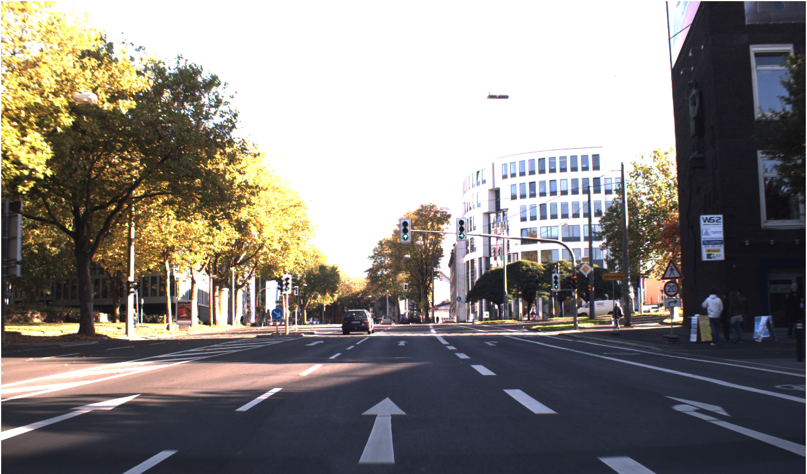
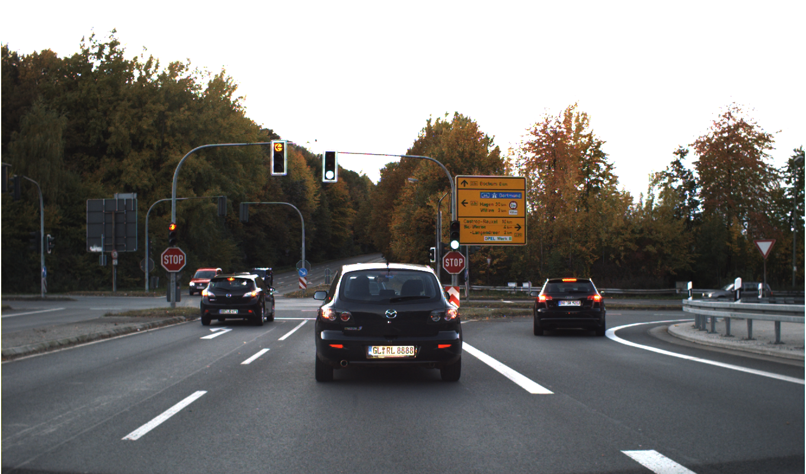

Ứng dụng Rule-based Engine & LLM cho Traffic Signs
Người trình bày: Team AI
Kiểm duyệt thủ công bằng mắt là "cơn ác mộng" của QA Lead. Labeler thường xuyên mắc 3 lỗi chí mạng:
Gán biển STOP thành prohibitory thay vì other theo chuẩn GTSDB.
Gom 2 biển báo vào chung 1 box to, làm nhiễu model.
Bỏ sót checkbox sống còn như occluded (bị che khuất).

Đèn pha chói, biển báo nguy hiểm dễ bị lẹm / mờ (Kiểm tra readable)

Biển cấm nhỏ ở xa (Rủi ro: Miss object hoặc IoU thấp)
Thay thế sức người bằng hệ thống chấm điểm tự động 100%.
sign_class, occluded.1 giây chạy Script = 1 giờ soi bằng mắt.
$ python cvat_parser.py --gt data/ground_truth/gt_001.json --submission user_001.json
[Rule 5 - Family Mapping Trap] FAIL
BẪY ÁNH XẠ NHÃN! sign_class='stop' phải có label='other' nhưng User chọn 'prohibitory'.
💡 Hint: Guideline V1.2 - Phần 5.2 (Bảng Bẫy): Stop (GTSDB #14) thuộc nhóm 'other'. Đây là bẫy ánh xạ phổ biến nhất!
Hệ thống tự động tính toán chất lượng nhân sự Labeler:
| Nhóm Biển (Class) | Precision (Độ chính xác) | Recall (Độ bao phủ) |
|---|---|---|
| Prohibitory (Cấm) | 95.0% | 98.2% |
| Danger (Nguy hiểm) | 75.5% | 90.0% |
| Other (Khác) | 40.0% | 50.0% |
🎯 Attribute Completion Rate: 93.3%
(Insight: Labeler có xu hướng lười tick ô `occluded` khi biển bị che)
Nhúng Gemini AI đọc JSON Report, tự động viết email nhắc nhở Labeler bằng ngôn ngữ tự nhiên mềm mỏng.
Trộn lẫn "Golden Set" (Câu hỏi bẫy có đáp án) ẩn vào trong Task CVAT của Labeler để chấm điểm ngầm định kỳ.